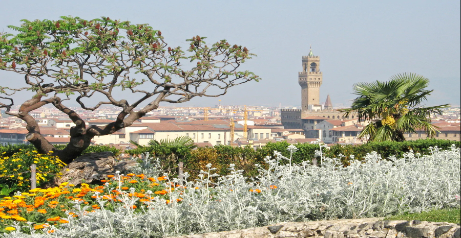

Specjalne uzasadnienie tego wyboru chyba nawet nie jest konieczne… Rzym, czyli wyjątkowe miasto z historią, zwane città eterna (Wieczne Miasto). Średniowieczne uliczki, stylowe place, zabytki, kafejki, targi – wszystko, czego dusza zapragnie. Historia, kultura, sztuka, a przede wszystkim udane wakacje.
Rimini
Rimini jest najbardziej popularnym kurortem wakacyjnym we Włoszech i jednym z najbardziej znanych nad całym Adriatykiem. Można odnieść wrażenie, że jest tu wszystko i są tu wszyscy. Rimini w dzień tętni życiem na kilkunastokilometrowej, szerokiej, piaszczystej plaży, a nocą miasto nie zasypia.
Turyn
Jeżeli Turyn kojarzy Ci się tylko z Całunem i fabryką FIAT, to znaczy, że musisz do stolicy Piemontu przyjechać i odkryć ją po swojemu. My polecamy, żeby zrelaksować się w parku del Valentino, wybrać się na zakupy na bazar Gran Balon i oczywiście wjechać szklaną windą na szczyt Mole Antonelliana, żeby podziwiać miasto z perspektywy ptaka
Wenecja
Tętniące miastem życie bez autobusów i taksówek. Trochę czarujące i romantyczne, trochę zatłoczone i drogie. Pobuszuj po niesamowitej księgarni Libreria Acqua Alta, w której można znaleźć książki w języku weneckim z fantazyjnymi okładkami. Może masz ochotę poplażować? Wenecjanie wybierają do tego wysepkę między Malamocco i portem San Niccolò.
Neapol
Bez wątpienia Neapol to najbardziej żywiołowe włoskie miasto. Jest miastem najznakomitszej na świecie pizzy (tutaj ją wymyślono), opery, ruchliwych ulic, piłki nożnej, religii i Sophii Loren. Nigdzie indziej we Włoszech nie ma takiego kultu rodziny, pobłażania dla drobnych wykroczeń i romantycznych uliczek z suszącym się praniem.
San Gimignano
Toskańska perełka, w której czas płynie wolniej niż rozleniwione od upału myśli. Jej przydomek to "Manhattan Średniowiecz", odnoszący się do wysokich zabudowań. Między XIII a XV wiekiem powstało tu wiele czworokątnych wież obronnych. Część z nich przetrwała do dziś.
Toskania
Toskania to przypuszczalnie najpiękniejszy region we Włoszech łączący w sobie wszystkie cechy włoskiego dolce vita. Są tu piękne krajobrazy, słynnące na całym świecie urokliwe, średniowieczne miasteczka i dzikie plaże u wybrzeża. Możemy wypoczywać w basenie pośród winnic regionu Chianti, leżeć nad morzem lub zwiedzać architektoniczne cuda tutejszej urbanistyki. Na koniec dnia otrzymamy świetną kolację i butelkę Chianti Classico.
Florencja

Któż niechciałby wybrać się do stolicy Toskanii na wypoczynek? Florencja słynie z wielu galerii sztuki. Uffizi, dell’Accademia to najbardziej rozpoznawalne z nich. Zaszyj się w kinie studyjnym Odeon w Palazzo dello Strozzino, aby obejrzeć włoskie hity kinowe. Wdrap się na wzgórze Bellosguardo z którego rozciągający się widok na miasto to wymarzone tło romantycznego wieczoru.
Bergamo
Bergamo nazywane jest „bramą do Mediolanu”. Bergamo to nie jedno, ale dwa miasta. Città Alta położona na wzgórzu średniowieczna osada, w której odnajdą się miłośnicy zabytków oraz współczesne Citta Bassa, w którym podróżni mogą dobrze zjeść, zrobić zakupy i poczuć kosmopolityczny zgiełk. Podróżować między jednym a drugim Bergamo najlepiej jest kolejką szynową, z której można podziwiać okolice w pełnej krasie.